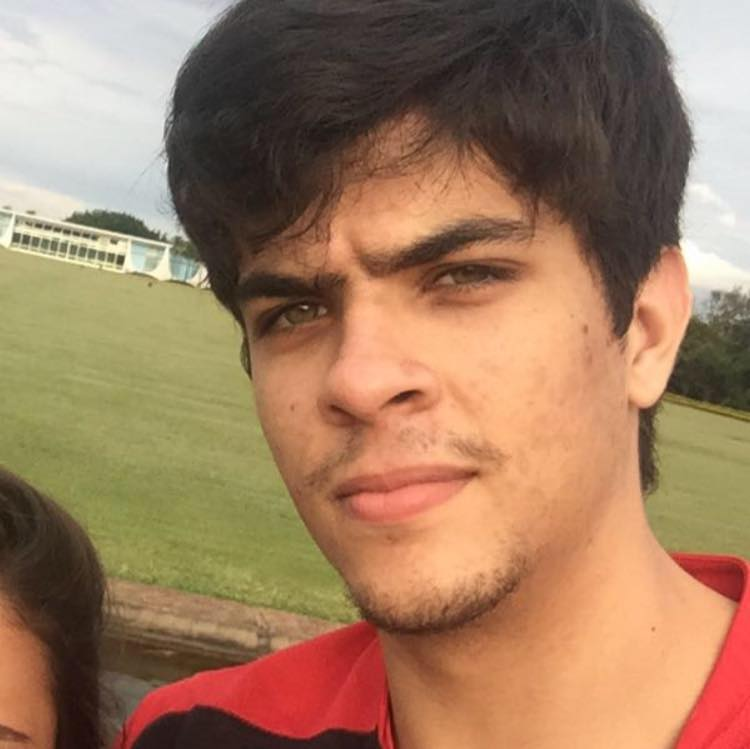
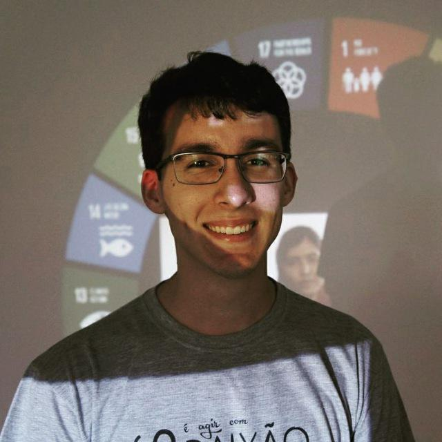
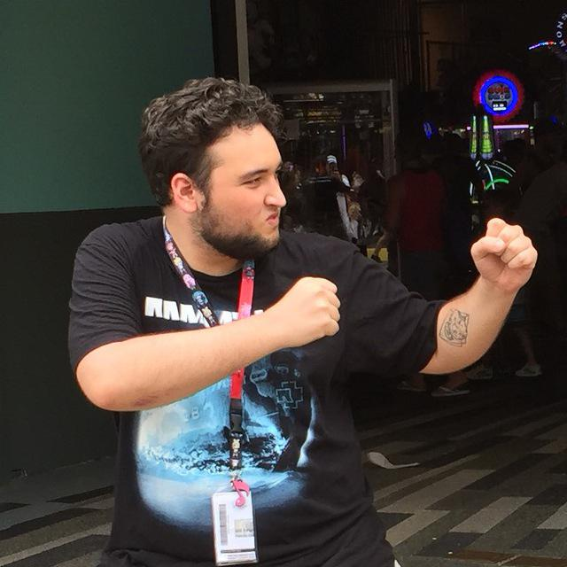
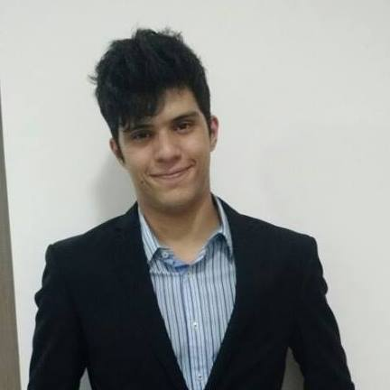
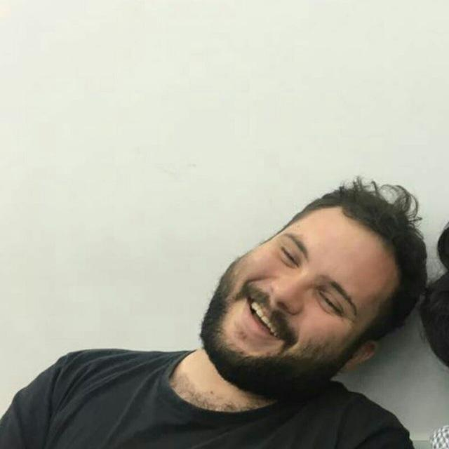
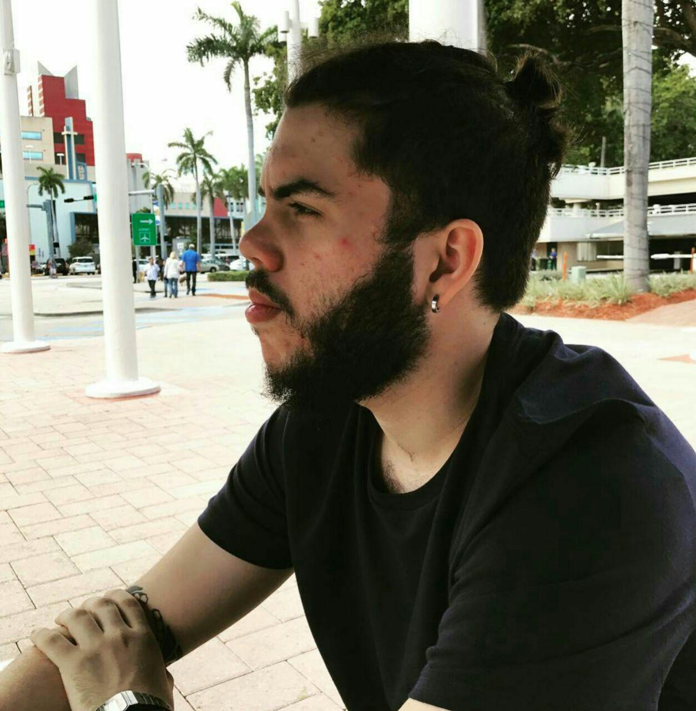
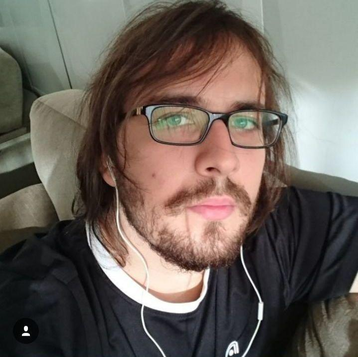
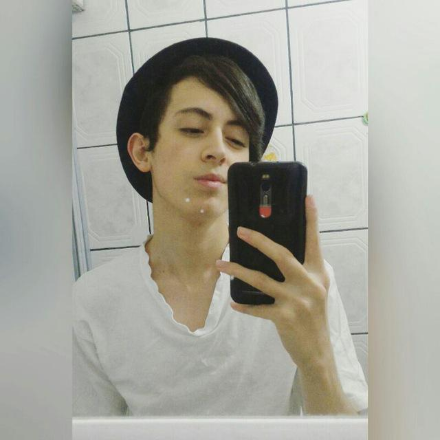
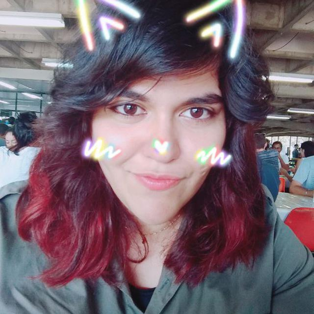

Conheça um pouco sobre todos os envolvidos
Pedro "Nemroda" Nemrod
Rota Superior
Pedro Nemrod é um jogador muito querido pelo time. Sua versatilidade permite jogar de forma eficiente na rota superior. Precursor do movimento "Sentinelas Avançadas", Nemrod está sempre a frente da equipe inimiga quando o assunto é visão de mapa. Na rota superior, Nemroda sempre procura impor um estilo de jogo agressivo utilizando campeões tanques e sempre surpreende com um First Blood.
Heróis Favoritos:


Divo "Divoo" Alejandro
Rota do Meio
Divo é um jogador conhecido pelo seu estilo seguro e passivo na fase de rotas, mas agressivo sempre que necessário. Seu estilo de jogo lembra muito a do Kami. Divo é famoso por seus Magos de Controle, sempre mantendo a vantegem de farm e focando em objetivos. Com as mecânicas sempre em dia, Divo está semppre mostrando que veio para ficar, com sua liderança e trabalho em equipe.
Heróis Favoritos:


Emiliano "Eliminando" Gomes
Caçador
 Emiliano é o fundador do Lolsadia & Alegria Gaming ©. Com seu conhecimento e experiência, juntou estes meninos de ouro, e com isso fundou o time de League of Legends da LeA Gaming. Emiliano é conhecido por utilizar heróis de utilidade na Floresta, que junto de suas chamadas e predições do Caçador inimigo, lidera o time para a vitória. Mas isso não quer dizer que seus heróis carries não serão uma dor de cabeça para a equipe inimiga. Emiliano veio para mostrar que é o elo forte da equipe.
Emiliano é o fundador do Lolsadia & Alegria Gaming ©. Com seu conhecimento e experiência, juntou estes meninos de ouro, e com isso fundou o time de League of Legends da LeA Gaming. Emiliano é conhecido por utilizar heróis de utilidade na Floresta, que junto de suas chamadas e predições do Caçador inimigo, lidera o time para a vitória. Mas isso não quer dizer que seus heróis carries não serão uma dor de cabeça para a equipe inimiga. Emiliano veio para mostrar que é o elo forte da equipe.
Heróis Favoritos:


Eduardo "XINERAY DUDU" Pavei
Atirador
 Eduardo é um jogador versátil e adaptativo. Seu modo de jogar é
bem único e supreende a quem olha. Nascido nas profundezas das Cataratas do Iguaçu, este menino piruleta chegou para mostrar com quantos barris de faz uma
vitória. Com sua vasta experiência em League of Legends, Eduardo lidera a Rota Superior com sua jogatina agressiva e fase de rotas excepcionais. Sempre que
possível ajuda as outras rotas para que sua vantagem seja distribuída pela equipe.
Eduardo é um jogador versátil e adaptativo. Seu modo de jogar é
bem único e supreende a quem olha. Nascido nas profundezas das Cataratas do Iguaçu, este menino piruleta chegou para mostrar com quantos barris de faz uma
vitória. Com sua vasta experiência em League of Legends, Eduardo lidera a Rota Superior com sua jogatina agressiva e fase de rotas excepcionais. Sempre que
possível ajuda as outras rotas para que sua vantagem seja distribuída pela equipe.
Heróis Favoritos:


Lucas "lucpena" Pena
Suporte
Diretamente dos becos escuros e perigosos da Asa Norte, Lucas é o suporte da equipe.Lucas fornece a proteção necessária para seu carrie poder farmar sem maiores preocupações. Possui um estilo seguro na fase de rotas, priorizando a proteção de seu carrie a evitar iniciativas que possam prejucar sua equipe, mas agressivando sempre que necessário. Lucas tem preferência por heróis com muita mobilidade ou tanques.
Heróis Favoritos:


Leonardo "Deus da Nova Era" Barros
Caçador (Reserva)
Leonardo atraiu a atenção de nossa equipe desde muito cedo. Criador de builds inovadoras como as builds "Dançarina" e "Inquisidora", demonstra habilidade e mecânicas em cada partida. Conhecido pelo seu jogo agressivo, Leonardo demonstra conhecimento e adaptação extraordinários. É conhecido pelo seu Lee Sin e pelo seu Tahm Kench na Rota Superior. Leonardo não vê a hora para atuar pela equipe.
Heróis Favoritos:

Gustavo "Lvl 4 Eevee" Oliveira
Suporte / Atirador (Reserva)
Gustavo é um suporte versátil com um jogo bem agressivo. Seu principal herói é a Nami, na qual ele se torna o terror da rota inferior quando consegue utilizar este herói. Gustavo possui um ótimo entrosamento com a equipe e demonstra dar conta do recado. Atual chefe do Departamento Médico, Gustavo cura seus aliados e os guia à vitória. Gustavo veio para mostrar aos adversários que a maré não está para peixes.
Heróis Favoritos:


Carlos "CarlosPym" Henrique
Caçador (Reserva)
Carlos está sempre na busca de um jogo sério, mostrando que não veio para brincar. Adere um perfil de jogo mais passivo, mesmo com heróis com alto poder agressivo. Seu foco é no farm e objetivos e ele está aqui para somar a equipe. No momento, Carlos está sendo treinado pelos melhores jogadores da equipe e estamos realizando um estudo com os maiores profissionais do ramo para encontrarmos seus pontos fortes. Seu potencial para a rota é alto e seu desempenho está cada vez mais próximo ao da equipe.
Heróis Favoritos:


Pedro "SorenFarrhont" Marques
Suporte (Reserva)
Sempre com heróis fora do meta, Pedro sempre mostra para o adversário que o nem sempre o meta é a melhor escolha. Sempre na busca pelo herói perfeito, a Sona é seu diferencial. Com uma jogabilidade agressiva, permite que o atirador agressive sempre que quiser. Pedro está sendo treinado com Carlos para chegarem ao nível da equipe. Pedro é famoso pela sua Illaoi.
Heróis Favoritos:


Atletas que já passaram por aqui
Akio "Hipps" Hirata
Rota do Meio
Akio é conhecido pelo seu estilo de jogo agresivo com o Yasuo. Com sua personalidade única, ele mostra que o Yasuo ainda possui espaço no cenário competitivo. Seu estilo de jogo é bem agressivo e ousado, buscando sempre impor uma pressão de rota contra seu adversário. Com uma ótima rotação, ele consegue ajudar o time e ajudá-lo em objetivos. Famoso por seu split push, que quando menos se espera, lá está mais uma torre ao chão.
Heróis Favoritos:


Amanda "AmandaDarkness" Tenório
Atiradora
A princípio, a Amanda não é uma Carrie, mas sua performance surpreendeu a equipe, e desde então é nossa AD Carrie titular. Amanda possui, um estilo agressivo e preciso de jogo. Seu posicionamento e visão de jogo são impecáveis, o que a torna uma ameaça constante para a equipe adversária. Como atiradora, sua Caitlyn e sua Jinx são seu diferencial, com armadilhas precisas e ultimates extraordinários.
Heróis Favoritos:

Cargos
Aqui você confere o papel de cada um que está por trás deste grande clube de e-Sports, que a cada dia que passa prova seu nome e que veio para ficar.
Emiliano "Eliminando" Gomes
Fundador
Presidente-Executivo
Eduardo "XINERAY DUDU" Pavei
Diretor Operacional
Diretor de Conteúdo
Divo "Divoo" Alejandro
Diretor Financeiro
Pedro "Nemroda" Nemrod
Diretor de Comunicações Internacionais
Lucas "lucpena" Pena
Diretor de Tecnologia
Diretor de Mídias Digitais
Gustavo "Lvl 4 Eevee" Oliveira
Departamento Médico
Mateus "nemmaisumpio" Pio
Diretor de Marca
Coach
Mascote
Miguel "Leugim30" Freitas
Diretor de TI